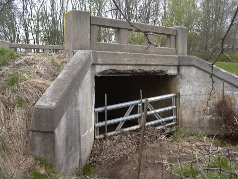
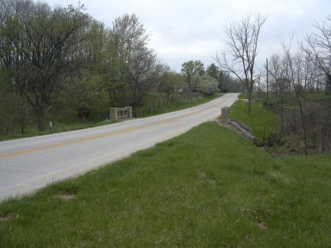
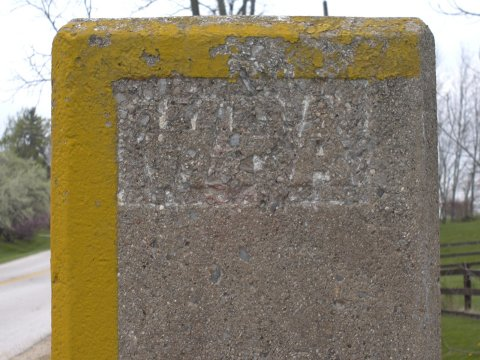
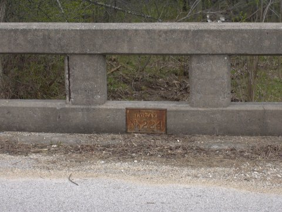

Dug Hill Bridge
This is the legend: the Dug Hill Bridge over the Auglaize River between Wapakoneta and Defiance is haunted by the ghost of a hunter who was accidentally shot. He crosses the bridge at midnight and chases travellers.
According to an e-mail I received from Auglaize County resident Brendan W., this story might not be exactly right. Defiance is far from Wapakoneta, roughly thirty miles away, and there no longer is a road "between" them per se. There is a Defiance Street in Wapakoneta, but it becomes Blackhoof Street before it crosses the Auglaize River.

Many miles north of Wapakoneta, at the Allen County line, there is a Dug Hill Road which runs off SR 198. It crosses a creek at one point; is this the famous "Dug Hill Bridge"? The signs indicate that the WPA put this bridge up sometime in the 1930s. If the ghost chases people off this bridge, he doesn't have far to go.



Back